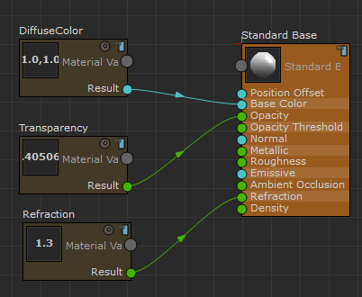
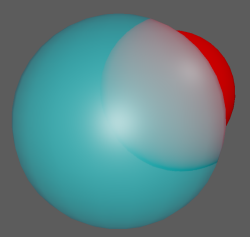

您可以通过将曲面设置为透明，然后将“折射”(Refraction)属性设置为大于 1，向 StingrayPBS 节点添加折射。
- 将 StingrayPBS 着色器指定给对象，然后在“预设材质”(Preset Material)下拉列表中选择“自定义”(Custom)，以创建新的 ShaderFX 图表。
- 选择“标准基础”(Standard Base)节点，并将“融合模式”(Blend Mode)设置为“透明”(Transparent)。
- 创建“材质变量”(Material Variable)节点。
在“属性编辑器”(Attribute Editor)中，将其“类型”(Type)设置为“标量”(Scalar)。（可选操作）为清楚起见，可以将该节点重命名为“透明度”。
将“透明度”(Transparency)的“结果”(Result)输出连接到“标准基础”(Standard Base)节点的“不透明度”(Opacity)输入。
- 创建第二个“材质变量”(Material Variable)节点。
在“属性编辑器”(Attribute Editor)中，将其“类型”(Type)设置为“标量”(Scalar)。（可选操作）为清楚起见，可以将该节点重命名为“折射”。
- 将“折射”(Refraction)的“结果”(Result)输出连接到“标准基础”(Standard Base)节点的“折射”(Refraction)输入。

- 在“属性编辑器”(Attribute Editor)中将“折射”(Refraction)属性调整为大于 1 的值。
折射值为 1.0 表示空气，值约为 1.3 模拟玻璃。
本示例使用的值为 1.3。
